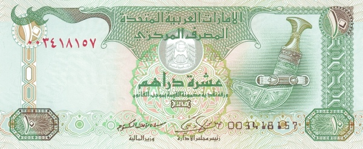

1 fil coin
The Dubai 1 Fils coin is a small denomination coin from the United Arab Emirates. It is made of bronze and features a round shape with a plain edge. The obverse side displays the denomination in Arabic characters, surrounded by the name of the country in both Arabic and English. The reverse side often includes imagery such as date palms, symbolizing the importance of agriculture and food production in the region.5 fil coin
The Dubai 5 Fils coin is another low-denomination coin from the United Arab Emirates. It is typically made of a durable metal alloy, such as bronze or copper-nickel, and has a small, round design with a plain edge. The obverse side features the coin's denomination in Arabic, accompanied by the country's name in both Arabic and English, symbolizing the UAE's cultural and linguistic heritage. The reverse side often includes a design that represents aspects of Emirati culture or heritage10 fil coin
A small, round coin usually made of bronze or other durable alloys. The obverse side displays the denomination in Arabic, along with the UAE’s name in Arabic and English. The reverse often features traditional Emirati symbols, such as a date palm or heritage-related design. It represents 0.10 AED.
25 fil coin
Slightly larger than lower denominations, this coin is usually made of a copper-nickel alloy. The obverse includes the denomination in Arabic and the UAE's name. The reverse commonly features a dhow, symbolizing the nation’s maritime history. It is equivalent to 0.25 AED.50 fil coin
Larger and more prominent, typically made of copper-nickel. The obverse shows the denomination in Arabic alongside the UAE’s name. The reverse often features distinctive cultural imagery, such as a coffee pot (dallah), symbolizing Arab hospitality. Its value is 0.50 AED.1 dirham coin
A commonly used coin, often made of a durable alloy. The obverse displays the denomination in Arabic and the UAE's name in both Arabic and English. The reverse typically features cultural symbols such as a coffee pot (dallah), representing Arab hospitality.5 dirham note
The dubai 5 dirham note was first issued in 1984 as a paper note. There have been two different issues of this denomination: initially a very light turquoise-blue paper note, and from May 1996, a green polymer note. Since the start of issue there have been six signature combinations. Two other combinations were not issued.
